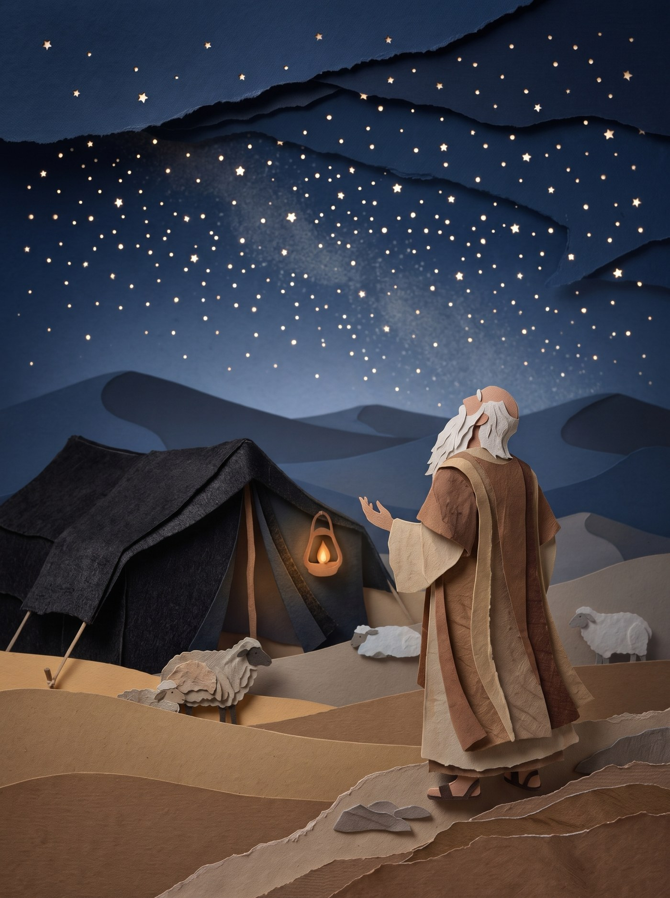
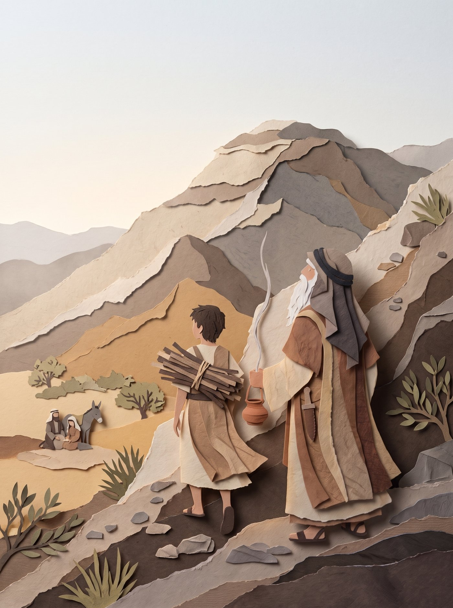
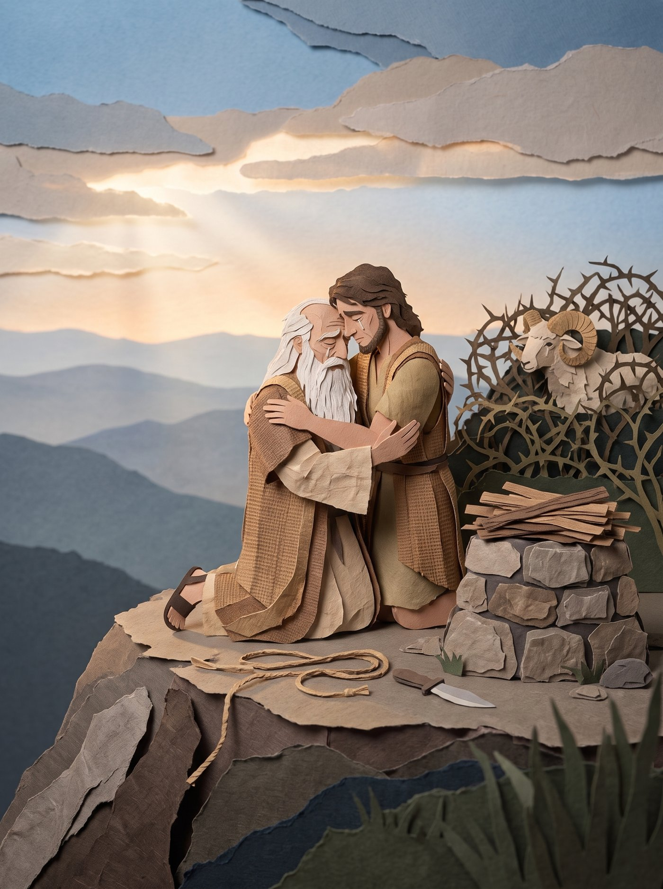

Capítulo 2
Abraham e Isaac: la fe que tropieza
Parte I: la promesa · Génesis 12; 15–16; 18; 20–22
La escena
Recreación: así pudo haber sido. Los hechos están en Génesis 11 a 22. Lo que pensaban y sentían se imagina a partir del texto y de lo que se sabe de la época.
Una ciudad con luna
Ur de los caldeos, en el sur de Mesopotamia, unos dos mil años antes de Cristo. Si el jardín del capítulo anterior era verde y silencioso, Ur es todo lo contrario. Es una de las ciudades más ricas del mundo. Calles de adobe, mercados llenos, barcos que suben por el Éufrates cargados de cobre, marfil y madera. Escribas que llevan cuentas en tablillas de barro. Y en el centro, dominando todo, una montaña hecha por manos humanas: una torre escalonada de ladrillo, el templo del dios luna, que se ve desde lejos en la llanura.
Ahí vive un hombre llamado Abram. Tiene familia, tiene bienes, tiene una vida armada. Su padre, Taré, y su casa servían a otros dioses (Jos 24:2). Es decir, Abram no creció en un hogar de fe. Creció mirando la luna como si fuera Dios.
Y tiene una herida que se nota en cada fiesta familiar. Su esposa, Sarai, es hermosa, pero la Biblia lo dice sin adornos: «Mas Sarai era estéril, y no tenía hijo» (Gn 11:30). En ese mundo, no tener hijos no era solo una tristeza. Era una vergüenza pública. Era no tener futuro, no tener a quién dejarle nada, no tener quién te entierre. La gente lo comentaba. Y Sarai lo cargaba en silencio, año tras año.
La familia sale de Ur con rumbo a Canaán, pero se queda a mitad de camino, en Harán, en el norte, casi mil kilómetros río arriba. Allí muere Taré. Y allí, cuando Abram ya tiene setenta y cinco años, cuando cualquiera pensaría que su vida ya está escrita, Dios le habla.
«Vete de tu tierra y de tu parentela, y de la casa de tu padre, a la tierra que te mostraré» (Gn 12:1).
Fíjate en lo que no dice. No dice a dónde. No da un mapa. Solo dice: vete. Y luego una promesa tan grande que suena casi a broma para un hombre viejo y sin hijos: que va a hacer de él una nación grande, y que en él «serán benditas en ti todas las familias de la tierra» (Gn 12:3).
Todas las familias de la tierra. La tuya también. Guarda esa frase.
Y Abram se fue, como Dios le dijo (Gn 12:4).
Seiscientos kilómetros de fe
Imagínate la caravana. No es un viaje de turismo. Son tiendas de pelo de cabra, ovejas, asnos, siervos, niños de los siervos, ollas, odres de agua, todo lo que tienen. Caminan al paso de los animales, unos veinte o treinta kilómetros por día cuando el terreno ayuda. De Harán a Canaán son más de seiscientos kilómetros. Bajan por Siria, cruzan ríos, duermen bajo las estrellas, sin saber bien qué van a encontrar.
La carta a los Hebreos lo resume con una frase que da escalofrío: salió «sin saber a dónde iba» (He 11:8).
Llegan a Canaán. Pasan por Siquem, en el centro de la tierra. Y Dios se le aparece otra vez y le dice que esa tierra se la va a dar a su descendencia (Gn 12:7). Abram, que no tiene ni un hijo, levanta un altar de piedras. Es su manera de decir: te creo, aunque no lo vea.
Hasta aquí, parece la historia de un héroe. Pero la Biblia no tiene héroes perfectos. Y lo que viene lo demuestra.
La mentira en la frontera de Egipto
Llega el hambre. Una sequía de esas que secan los pozos y matan a los animales. Y Abram hace lo que hacían todos en esa región cuando faltaba la lluvia: baja a Egipto, donde el Nilo nunca falla.
Y en la frontera, le entra miedo.
Su lucha. Aquí está la lucha de Abram, y es tan humana que duele. Es el hombre que dejó todo por obedecer a Dios. El que creyó sin mapa. Y en cuanto ve un peligro, se olvida de quién lo trajo hasta ahí. Mira a su esposa y piensa en sí mismo. Le dice: «He aquí, ahora conozco que eres mujer de hermoso aspecto; y cuando te vean los egipcios, dirán: Su mujer es; y me matarán a mí, y a ti te reservarán la vida. Ahora, pues, di que eres mi hermana, para que me vaya bien por causa tuya» (Gn 12:11-13). Para que me vaya bien. A mí. Honestamente hablando, no hay manera de embellecer esto. Abram tiene miedo de morir y deja a su mujer expuesta para salvarse. No es del todo mentira, porque Sarai era su media hermana, hija de su padre (Gn 20:12). Pero una verdad a medias dicha para engañar es una mentira completa. Y Sarai, la mujer estéril de la que todos hablaban, ahora además es entregada como si no fuera de nadie.
Pasa lo que Abram temía. Los príncipes del faraón la ven, la alaban, y se la llevan al palacio. Y a Abram, de paso, le regalan ovejas, vacas, asnos y camellos por ella. Imagínate a Sarai, sola en una casa extranjera, con un idioma que no es el suyo, sin saber qué va a pasar esa noche. Y a Abram afuera, con sus animales nuevos, sin poder dormir.
Pero Dios no abandona a Sarai. Hiere al faraón y a su casa con plagas por causa de ella, y el faraón, un rey pagano, termina reprendiendo al hombre de fe: «¿Qué es esto que has hecho conmigo? ¿Por qué no me declaraste que era tu mujer?» (Gn 12:18). Y lo echa del país.
Lo más duro es que no fue la única vez. Años después, en Gerar, Abraham vuelve a decir exactamente lo mismo: que Sara es su hermana (Gn 20:2). El mismo miedo. El mismo error. Y Dios, otra vez, protege a Sara.
Así es la fe de verdad. No es una línea recta hacia arriba. Tropieza. Vuelve a tropezar en la misma piedra. Y Dios sigue ahí.
Mira las estrellas
Pasan los años y el hijo no llega. Abram ya es rico, pero la riqueza no le llena la tienda. Una noche se lo dice a Dios sin rodeos: que no le ha dado hijos, y que su heredero va a ser un siervo de su casa (Gn 15:3). Es la queja de un hombre cansado de esperar.
Y Dios no lo regaña. Lo saca afuera.
Imagínate esa noche en el desierto de Canaán. Sin luces de ciudad, sin humo, sin nada. Un cielo tan lleno de estrellas que parece que se va a caer encima. Ese mismo cielo que en Ur adoraban como si fuera Dios, ahora Dios mismo se lo muestra como obra suya.
«Mira ahora los cielos, y cuenta las estrellas, si las puedes contar. Y le dijo: Así será tu descendencia» (Gn 15:5).

Abram se queda mirando. Un viejo sin hijos, con el cuello doblado hacia arriba, tratando de contar lo incontable. Y entonces pasa algo que va a cambiar la historia del mundo, y la Biblia lo cuenta en una línea:
«Y creyó a Jehová, y le fue contado por justicia» (Gn 15:6).
Creyó. No dice que fuera perfecto. Acabamos de ver que no lo era. No dice que hubiera hecho méritos. Dice que creyó, y que Dios le contó esa fe como si fuera justicia. Como si estuviera limpio. Esa frase es una de las más importantes de toda la Biblia, y la vamos a volver a encontrar en las cartas de Pablo.
La impaciencia
Pero creer una noche no es lo mismo que esperar diez años. Y diez años pasan. Sarai sigue sin hijos, y la esperanza se va gastando como se gasta una cuerda.
Entonces Sarai propone algo que en su época era legal y hasta normal: que Abram tenga un hijo con su sierva egipcia, Agar, y ese hijo se cuente como de ella. «Quizá tendré hijos de ella» (Gn 16:2). Ese «quizá» lo dice todo. Es la voz de una mujer que ya no se atreve a esperar de Dios y busca hacerlo a su manera.
Abram acepta. Agar queda embarazada. Y lo que parecía una solución se vuelve un incendio en la familia. Agar mira con desprecio a su señora. Sarai, herida en lo más hondo, culpa a Abram. Abram se lava las manos. Y Sarai trata tan mal a Agar que la muchacha, embarazada y sola, huye al desierto.
Aquí la Biblia hace algo que nadie esperaría en un libro antiguo. Deja a Abram y a Sarai, y se va detrás de la esclava. Una extranjera, sin derechos, sin nadie. El ángel de Jehová la encuentra junto a una fuente en el camino del desierto y la llama por su nombre: «Agar, sierva de Sarai, ¿de dónde vienes tú, y a dónde vas?» (Gn 16:8).
Y Agar, la que nadie veía, le pone a Dios un nombre que nadie le había puesto antes: «Tú eres Dios que ve» (Gn 16:13).
Así mira Dios a las mujeres que todos dejan de lado. Así mira a los que sobran.
La risa
Abram cumple noventa y nueve años. Dios le cambia el nombre: ya no Abram, que quiere decir «padre enaltecido», sino Abraham, porque Dios lo ha puesto «por padre de muchedumbre de gentes» (Gn 17:5). Imagínate el chiste en la boca de los vecinos: padre de una multitud, y no tiene ni un hijo con su esposa.
Un día, en el calor del mediodía, junto a los encinos de Mamre, llegan tres visitantes. Abraham corre a recibirlos, les hace traer agua para lavarse los pies, les prepara comida. Y uno de ellos dice que dentro de un año Sara tendrá un hijo. Sara está escuchando detrás de la tela de la tienda. Tiene noventa años. Y se ríe por dentro. Una risa amarga, de esas que uno se ríe para no llorar: «¿Después que he envejecido tendré deleite, siendo también mi señor ya viejo?» (Gn 18:12).
Y Dios responde con una pregunta que es para ella, y es para ti: «¿Hay para Dios alguna cosa difícil?» (Gn 18:14).
Un año después, nace el niño. Abraham tiene cien años. Le ponen Isaac, que en hebreo quiere decir «él ríe». Y Sara, la mujer de la que se burlaban, la que se rió de amargura, ahora se ríe de alegría: «Dios me ha hecho reír, y cualquiera que lo oyere, se reirá conmigo» (Gn 21:6).
La risa amarga se volvió risa de verdad. Así termina Dios las historias que nosotros dábamos por perdidas.
El monte que Dios le diría
Isaac crece. Ya no es un bebé: es un muchacho fuerte, capaz de cargar leña cuesta arriba. Es la promesa hecha carne. Es todo.
Y una noche, Dios llama otra vez.
«Abraham.»
«Heme aquí.»
Y lo que Dios le dice es lo más difícil que se puede escuchar: «Toma ahora tu hijo, tu único, Isaac, a quien amas, y vete a tierra de Moriah, y ofrécelo allí en holocausto sobre uno de los montes que yo te diré» (Gn 22:2).
Tu hijo. Tu único. A quien amas. Cada palabra es un golpe más cerca del corazón.
La Biblia no cuenta qué sintió Abraham esa noche. Solo dice que se levantó muy de mañana (Gn 22:3). Pero se puede imaginar. Un viejo despierto en la oscuridad de la tienda, escuchando la respiración de su hijo dormido. Sin poder contárselo a Sara. Sin poder contárselo a nadie. Con las manos temblando mientras ensilla el asno y corta la leña antes de que salga el sol.
Salen de Beerseba, en el sur. Dos siervos, el asno, la leña, Isaac. Hasta el monte Moriah hay unos ochenta kilómetros de subida por los montes de Judea. Un día de camino. Dos días. Dos noches junto al fuego, mirando a su hijo comer, oyéndolo hablar, sabiendo lo que nadie más sabe.
«Al tercer día alzó Abraham sus ojos, y vio el lugar de lejos» (Gn 22:4).
Les dice a los siervos que esperen con el asno. Y les dice algo raro: que él y el muchacho van a subir a adorar «y volveremos a vosotros» (Gn 22:5). Volveremos. Los dos. No dice volveré. Algo le dice adentro que Dios no le va a fallar, aunque no sabe cómo.
Pone la leña sobre los hombros de Isaac. Él lleva el fuego y el cuchillo. «Y fueron ambos juntos» (Gn 22:6).

Suben en silencio. Las piedras sueltas bajo las sandalias, el olor de la resina en la leña, el viento seco del monte. Y en medio del silencio, el muchacho habla.
«Padre mío.»
«Heme aquí, mi hijo.»
«He aquí el fuego y la leña; mas ¿dónde está el cordero para el holocausto?» (Gn 22:7).
Esa pregunta. La pregunta más inocente y más terrible de la Biblia. Isaac no es tonto. Ha visto sacrificios. Sabe que falta lo principal.
Y Abraham, con la garganta cerrada, le da una respuesta que es más grande de lo que él mismo entiende en ese momento: «Dios se proveerá de cordero para el holocausto, hijo mío. E iban juntos» (Gn 22:8).
E iban juntos. Otra vez. El padre y el hijo, subiendo juntos al monte.
El cuchillo y el carnero
Llegan arriba. Abraham levanta un altar de piedras, una por una. Acomoda la leña. Y ata a su hijo.
La Biblia no dice que Isaac se resistiera. Un muchacho que sube cargando leña monte arriba podía haberse soltado de un viejo de más de cien años. No lo hace. Se deja atar. Se acuesta sobre la leña que él mismo cargó.
Abraham extiende la mano. Toma el cuchillo.
Y una voz desde el cielo lo llama (Gn 22:11). Dos veces su nombre, con urgencia, como quien grita para detener a alguien al borde de un precipicio.
«No extiendas tu mano sobre el muchacho, ni le hagas nada» (Gn 22:12).
Imagínate ese cuchillo cayendo al suelo. Las manos desatando las cuerdas. El abrazo. Las lágrimas de los dos.
Y entonces Abraham levanta los ojos, y detrás de él hay un carnero «trabado en un zarzal por sus cuernos» (Gn 22:13). Atrapado ahí, como esperándolos. Abraham lo toma y lo ofrece en lugar de su hijo.

En lugar de su hijo. Esas cuatro palabras son el corazón de este capítulo y de todo este libro. Alguien muere en lugar de otro.
Abraham le pone nombre a ese lugar: «Jehová proveerá» (Gn 22:14). Y bajan del monte. Los dos. Juntos. Como él había dicho.
La historia según la Biblia
Reina-Valera 1960
El llamado
«Pero Jehová había dicho a Abram: Vete de tu tierra y de tu parentela, y de la casa de tu padre, a la tierra que te mostraré.» — Génesis 12:1
La fe que le fue contada por justicia
«Y creyó a Jehová, y le fue contado por justicia.» — Génesis 15:6
La pregunta de Isaac
«Entonces habló Isaac a Abraham su padre, y dijo: Padre mío. Y él respondió: Heme aquí, mi hijo. Y él dijo: He aquí el fuego y la leña; mas ¿dónde está el cordero para el holocausto? Y respondió Abraham: Dios se proveerá de cordero para el holocausto, hijo mío. E iban juntos.» — Génesis 22:7-8
En lugar de su hijo
«Entonces alzó Abraham sus ojos y miró, y he aquí a sus espaldas un carnero trabado en un zarzal por sus cuernos; y fue Abraham y tomó el carnero, y lo ofreció en holocausto en lugar de su hijo.» — Génesis 22:13
La misma piedra, dos veces
Los tropiezos de esta familia se repiten. La Biblia no los esconde.
| El tropiezo | Dónde | Lo que hizo Dios |
|---|---|---|
| Abram dice que Sarai es su hermana | Egipto (Gn 12:10-20) | Protege a Sarai y la devuelve |
| Abraham vuelve a decir lo mismo | Gerar (Gn 20) | Protege a Sara otra vez |
| Sarai y Abram no esperan y recurren a Agar | Canaán (Gn 16) | Va a buscar a Agar al desierto |
| Isaac, el hijo, repite la mentira del padre con Rebeca (Gn 26:7) | Gerar | Cumple igual su promesa |
Los hijos aprenden lo que ven. Isaac repitió el miedo de su padre palabra por palabra. Y aun así, Dios siguió con ellos.
La sombra de Jesús
«Dios se proveerá de cordero». Isaac preguntó dónde estaba el cordero. En el monte, la respuesta fue un carnero. Pero la pregunta quedó abierta durante dos mil años, hasta que un hombre en el río Jordán vio venir a Jesús y dijo: «He aquí el Cordero de Dios, que quita el pecado del mundo» (Jn 1:29). Esa es la respuesta completa a la pregunta de Isaac.
El hijo único y amado. Dios le dijo a Abraham: «tu hijo, tu único, Isaac, a quien amas». Y Juan escribe: «Porque de tal manera amó Dios al mundo, que ha dado a su Hijo unigénito» (Jn 3:16). Lo que Abraham no tuvo que hacer, Dios lo hizo.
La leña sobre los hombros. Isaac subió el monte cargando la leña de su propio sacrificio. Jesús salió de Jerusalén cargando su cruz (Jn 19:17). Y el monte es el mismo: Moriah es Jerusalén. Es una sombra, no una profecía escrita, pero su parecido es asombroso.
Al tercer día. Para Abraham, su hijo estaba muerto desde el momento en que Dios se lo pidió. Al tercer día lo recibió de vuelta. Hebreos dice que, «en sentido figurado», Abraham recibió a Isaac de entre los muertos (He 11:19). Jesús resucitó al tercer día de verdad.
El perdón por la fe. Abraham mintió, dudó y se apuró. Y aun así Dios le contó su fe como justicia. Pablo lo usa como ejemplo para todos: «Creyó Abraham a Dios, y le fue contado por justicia» (Ro 4:3). Dios no salva a los que nunca tropiezan. Salva a los que le creen.
Todas las familias de la tierra. La promesa de Génesis 12:3 se repitió en el monte: «En tu simiente serán benditas todas las naciones de la tierra» (Gn 22:18). Pablo dice que esa promesa ya anunciaba la buena noticia para todos los pueblos (Gá 3:8). Esa bendición tiene nombre: Jesús, el descendiente de Abraham.
Nota del autor
Ver, imaginar la vulnerabilidad, la humanidad, la imperfección de personajes como Abraham. Uhh, Abraham… Isaac, Jacob, David, José de Egipto, Moisés. Sus luchas internas, externas, mentales, con otros semejantes.
Para seguir leyendo
- Génesis 12 y 15: el llamado de Abram y la noche de las estrellas.
- Génesis 16 y 21: Agar, Ismael y el Dios que ve.
- Génesis 18: los visitantes de Mamre y la risa de Sara.
- Génesis 22: el monte Moriah.
- Romanos 4 y Hebreos 11: cómo leen los apóstoles la fe de Abraham.